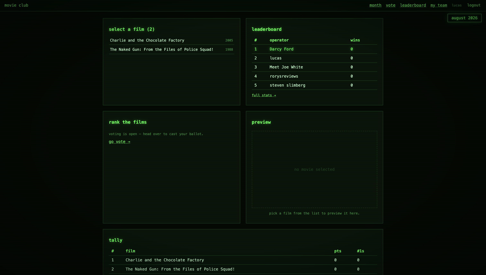
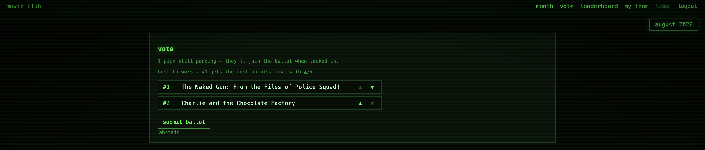
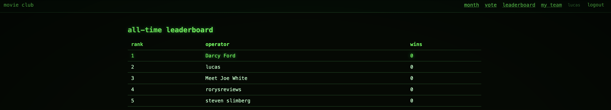

I spend most of my time as a data scientist / AI engineer: notebooks, models, pipelines. But every model I ship eventually needs an actual application around it, and my ability to build that part has always been limited. So I built one from scratch: Movie Club, a server-rendered FastAPI app that runs a monthly film competition for my friends and me.

The dashboard — submission phase, phosphor-green CRT theme.What is Movie Club?
Having moved from Melbourne to Berlin, I am no longer able to meet my friends for our monthly movie club competition, so I thought it is a good opportunity for my first deployed application to make an app for us. ### The Rules: Every month each team member submits one movie. Everyone watches and ranks all the picks best → worst. The top film wins; the bottom film sends its submitter to the bench (they still vote next month, but can’t submit). Repeat forever.
The product
The whole thing runs on a three-phase cycle lifecycle:
- SUBMITTING — each member picks one film via live search against the OMDB API. One pick per person, no duplicates.
- RANKING — an admin locks submissions, then everyone drags their ballot into order with ▲▼ controls.
- CLOSED — points are tallied by Borda count: position 1 of N films gets N−1 points, last place gets 0. Winner crowned, loser evicted, next cycle auto-created.
Joining is invite-only via a team code, and an all-time leaderboard tracks wins and losses per member.

The/vote ballot page, built as HTMX partials so reordering never reloads the page.

The all-time leaderboard. Bragging rights are permanent.The stack
I deliberately avoided React. The goal was to learn how a “real” web app works at the request/response level, not to learn a frontend framework:
| Layer | Choice |
|---|---|
| Hosting | FastAPI Cloud |
| Backend | FastAPI + Jinja2 templates + HTMX fragments |
| Database | PostgreSQL via SQLAlchemy 2.0, Alembic migrations (Supabase in prod) |
| Auth | Argon2 password hashing + signed session cookie (itsdangerous) |
| Movies | OMDB API |
| Styling | Hand-rolled CSS, black/phosphor-green CRT theme |
The architecture is refreshingly boring:
browser → router → SQLAlchemy model → template or redirectRoutes return either full pages or HTML fragments. HTMX swaps fragments into placeholders (#ballot, #search-results) — no SPA, no client state, no build step. For a voting app where interactions are small and local, this felt exactly right.
Next: Building a Recommender System
Here’s the part I’m most excited about. This little club is quietly generating a dataset:
- Every member’s full ranking of shared movies, every month, indefinitely
- Implicit signals: abstentions, submission choices, win/loss history
- A growing matrix of members × movies with ordinal preferences
The obvious problem with a 6-person club is sparsity — six months in, we might have 30 movies total. The fix: Letterboxd exports. Letterboxd lets any user export their entire diary and ratings as CSV (title, year, rating, watched date). Importing those gives every member hundreds of rated films immediately.
The plan:
- Members upload their Letterboxd export (or connect via the unofficial API).
- Normalize ratings onto a common scale and align with OMDB/IMDb IDs.
- Train an implicit-feedback model (probably start with simple matrix factorization, then something like implicit ALS or a neural CF model) on the union of club rankings + Letterboxd ratings.
Suddenly the cold-start problem mostly disappears: a new member arrives with years of taste already attached.